Project Lead
Jonathan Lyle Harris — Educator and designer focused on safer, human-scale public environments and practical design education.
Case Study
A Johnson & Wales Directed Experimental Education project using sensor data and software-controlled ventilation to keep raised beds productive year-round.
BloominBeds is an educational and applied R&D platform created in Professor Jonathan Lyle Harris's class at Johnson & Wales University. The goal: solve heat-trapping and seasonal instability in covered raised beds by combining real-time environmental sensing with controllable ventilation.
The system integrates Raspberry Pi hardware, sensor collection, and a web interface so students and growers can monitor temperature, humidity, soil conditions, and environmental trends in one place.
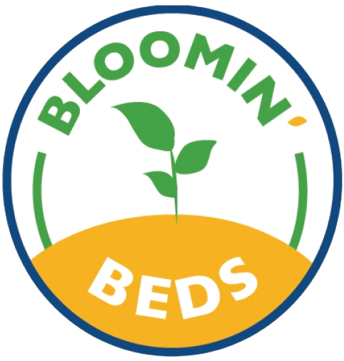
Our mission is to enable year-round sustainable gardening through technology and education. BloominBeds supports culinary programs, students, and community growers with a practical, data-informed way to maintain healthier growing conditions.
Within the 10+ person team, I owned three workstreams: active prototyping (building and wiring the physical sensor rigs and ventilation mechanism), 3D simulation (modeling heat flow and airflow in Rhino 3D and Grasshopper to predict where vents should go before cutting wood), and integrated control systems (writing the Python firmware on the Raspberry Pi that reads sensor data, evaluates threshold logic, and triggers the ventilation actuator).
I was also the primary contributor to the real-time web dashboard, building the front-end with HTML/CSS/JS and Chart.js to visualize temperature, humidity, and soil-moisture trends over time.
The original campus need was clear: during winter months and bright daytime sun, covered beds can trap heat aggressively and require active intervention. The team split into two focused paths to explore possible solutions.
Passive path: mechanical ventilation concepts with no electronics.
Active path: sensors, threshold logic, and software-based airflow control.
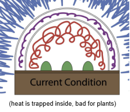
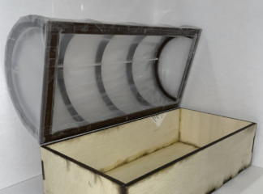
Two no-power concepts were tested as temperature-reactive mechanisms for automated vent behavior.
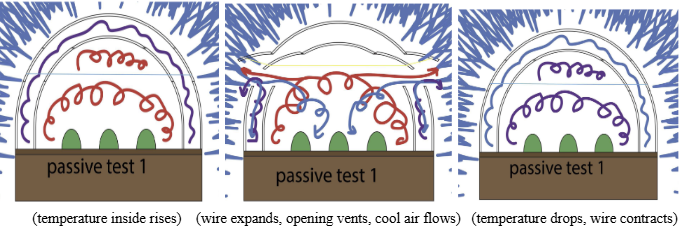
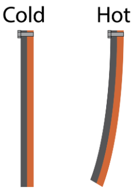
The active system integrated real-time sensors, web monitoring, and software-triggered ventilation. My contributions included a rotating shade/open mechanism, a pneumatic lift concept, and Rhino/Grasshopper simulations validating airflow improvements from side and top vent placement.

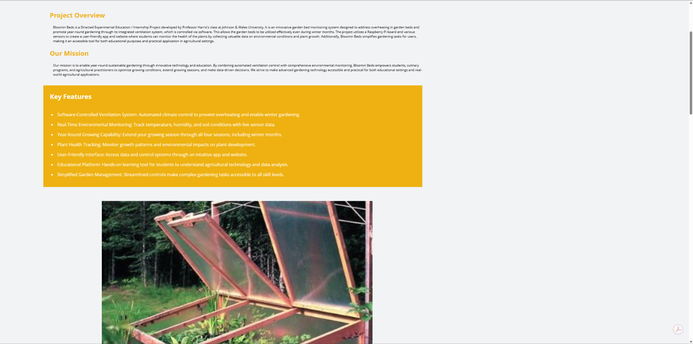
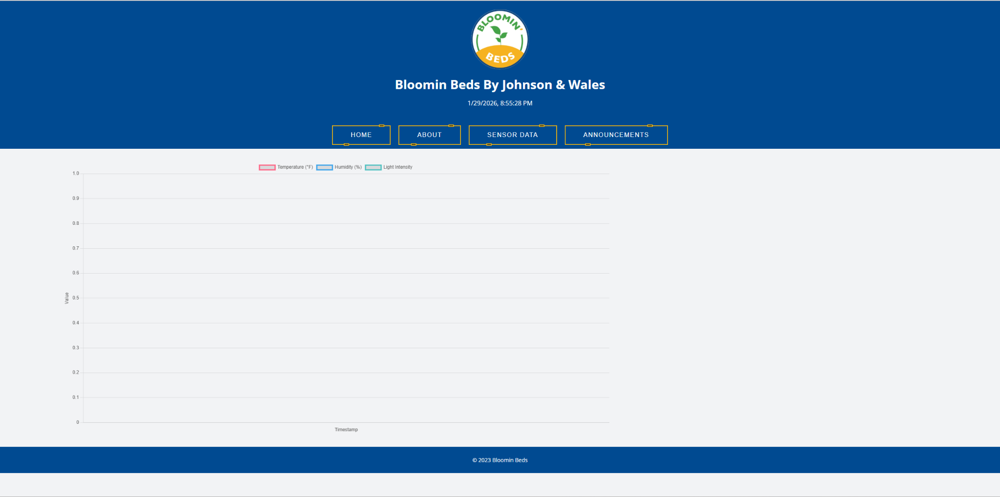
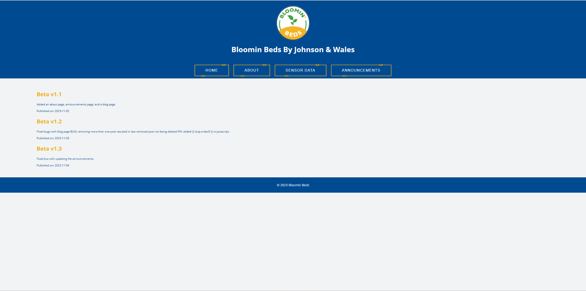
The project moved from simulation and model testing to a full-size operational bed at the JWU Harborside campus. Turnips were used as a live crop validation for system performance.
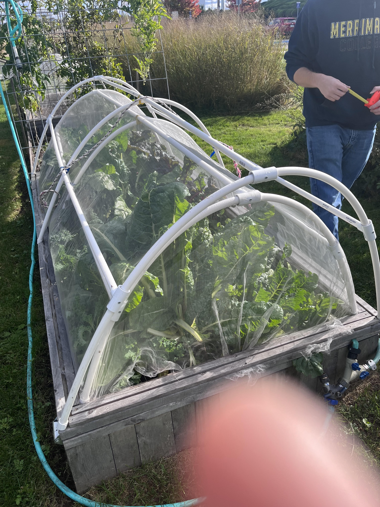

The final system stayed within healthy plant ranges over the test cycle and demonstrated that low-cost, sensor-driven bed control can improve year-round usability.
The BloominBeds effort was intentionally multidisciplinary across product design, prototyping, sensors, coding, and communication design.
Jonathan Lyle Harris — Educator and designer focused on safer, human-scale public environments and practical design education.
Michael Dattolo, Liz Virian, Tyler Perreault, Peikang Fan, Zak Vallee, Marshall Hayduk, Chris Dimovski, Keely Doyle, Joshua Keene, Mathew Hartung, and Cassandra R.


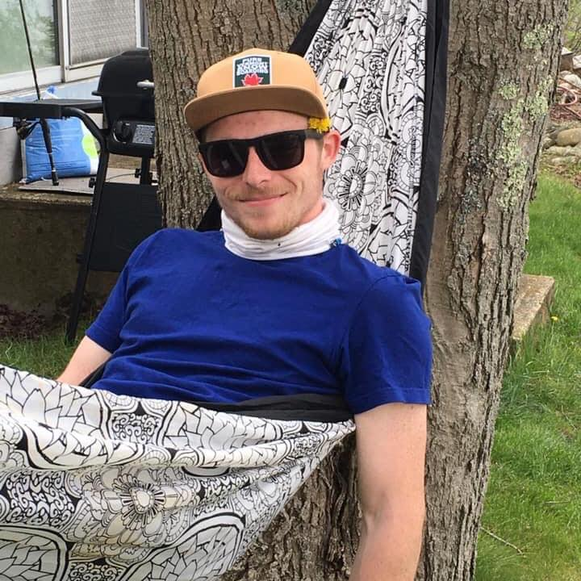


BloominBeds received the JWU Research Symposium 2024 Award for Creativity and Design for combining passive and active ventilation approaches, accessible UX, and measurable real-world impact.
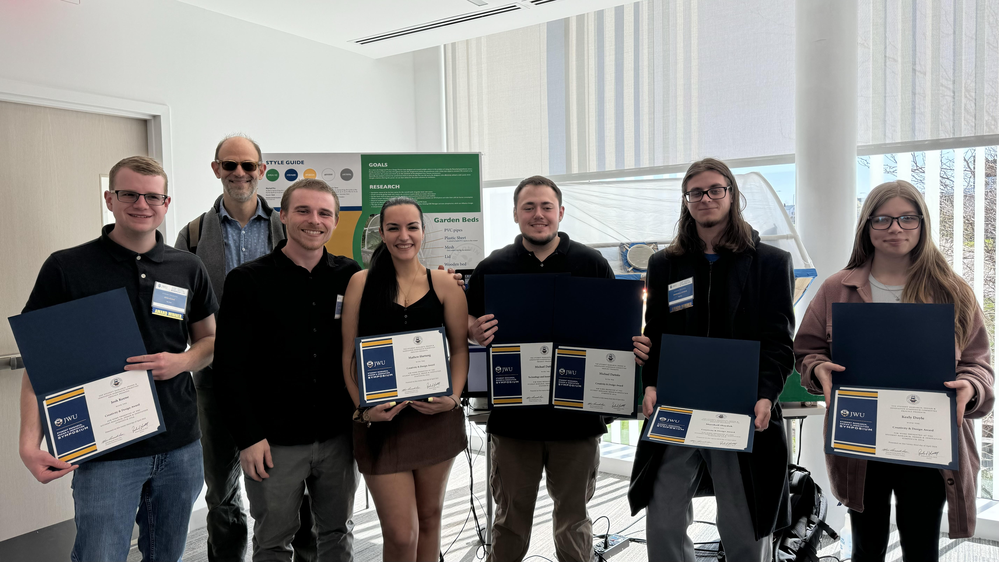
View the original BloominBeds repository for full historical materials and source files.